Background: Thomas Birch, Engagement Between the Constitution and the Guerriere, 1813. Museum of Fine Arts, Boston. Public domain.
Cold open · off Cape Henry, Virginia · 22 June 1807
A British Warship Fired Into the USS Chesapeake and Took Four of Her Sailors
The demand: HMS Leopard hailed the Chesapeake and asked to search for British deserters.
The attack: Commodore Barron refused. The Leopard fired broadsides into a ship not ready to fight.
The cost: Three Americans killed, eighteen wounded. The Chesapeake fired one gun, then surrendered.
The seizure: British officers took four sailors. Three were Americans.
Americans were furious. Jefferson could have had a war that summer. He chose not to.
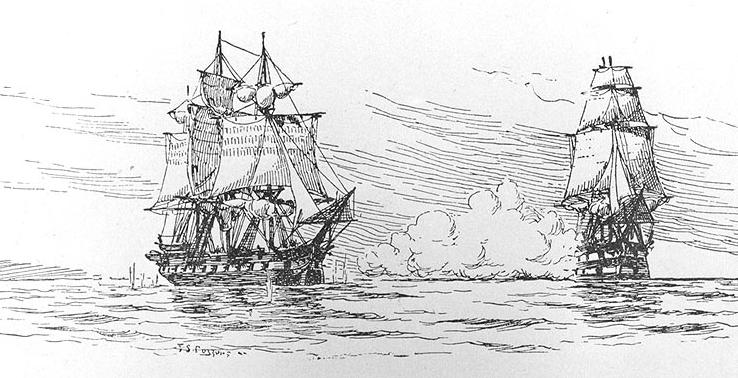
Image to comeHIST101_Ch7_Lec4_Slide02_Chesapeake_and_Leopard_revised_FA26.jpg
Fred S. Cozzens, Leopard and Chesapeake, drawing published 1897, ninety years after the event. Public domain, via Wikimedia Commons.
Sources: Naval History and Heritage Command, “Chesapeake-Leopard Affair”; Office of the Historian, “War of 1812–1815.”
The Republican fear · 1795–1807
Jefferson’s Republicans Believed War Was How Republics Died
Their creed: Armies, debt, and taxes made rulers strong and citizens weak.
In power after 1801: Jefferson shrank the army and navy and paid down the national debt.
The catch: A small, cheap republic had few tools when Britain or France pushed.
“Of all the enemies to public liberty war is, perhaps, the most to be dreaded.”
James Madison, “Political Observations,” 1795
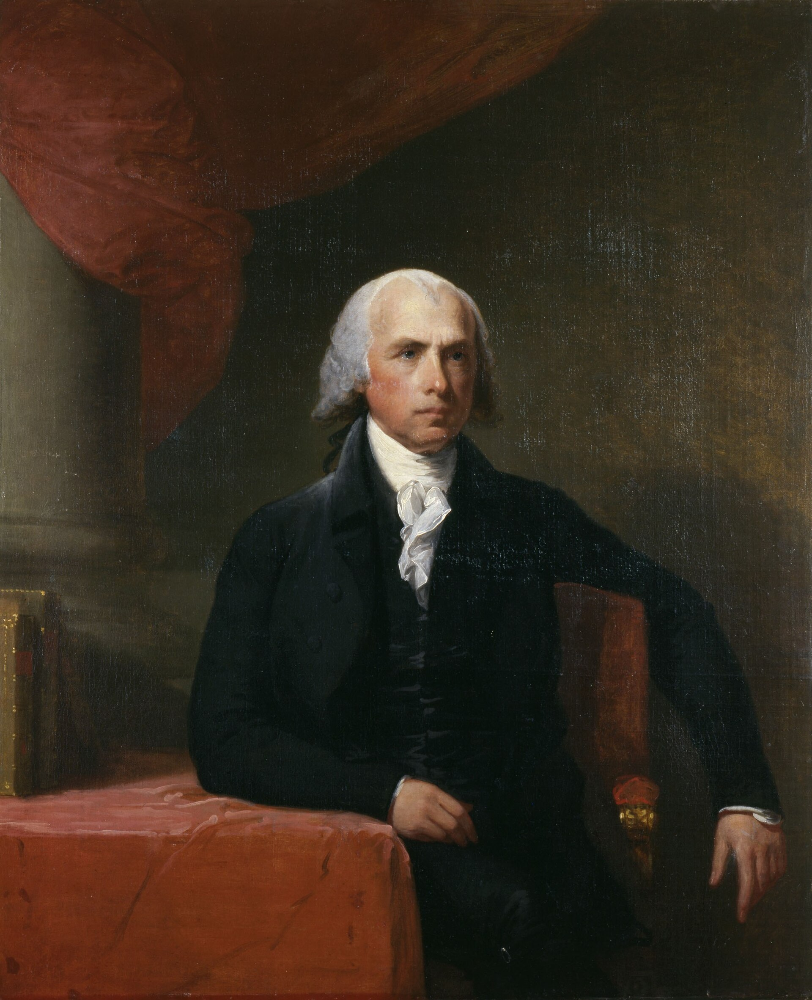
Image to comeHIST101_Ch7_Lec4_Slide03_James_Madison_Portrait_revised_FA26.jpg
Gilbert Stuart, James Madison, c. 1805–1807. Bowdoin College Museum of Art (1813.54). Public domain, via Wikimedia Commons.
Sources: Madison, “Political Observations,” 20 April 1795, Founders Online; Office of the Historian, “War of 1812–1815.”
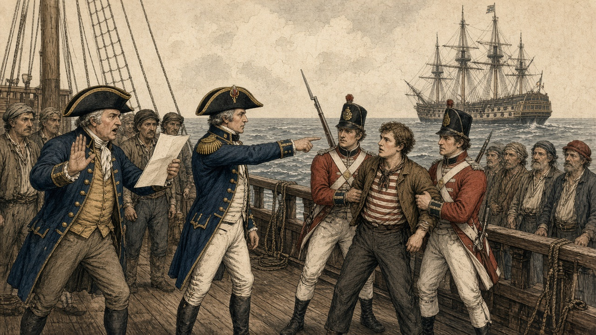
Image to comeHIST101_Ch7_Lec4_Slide04_Press_Gang_Boards_American_Ship_revised_FA26.png
AI-generated historical interpretation in a hand-colored copperplate-engraving style; not a period image or historical evidence.
The sailor’s war · Atlantic Ocean · 1803–1812
The Royal Navy Took Thousands of Sailors Off American Ships
The pressure: Britain fought Napoleon from 1803 to 1815 and needed every sailor it could find.
The practice: Boarding officers pulled men off American ships, claiming they were British.
The count: U.S. officials recorded more than 6,000 Americans taken this way.
The insult: Britain held “once an Englishman, always an Englishman.”
Impressment: forcing men into naval service. Britain used it on its own subjects and claimed the right to search neutral ships for them.
Sources: Office of the Historian, “War of 1812–1815”; Paul A. Gilje, Free Trade and Sailors’ Rights in the War of 1812 (2013).
You’re Jefferson, Summer 1807. What Do You Do?
Activity 1 • Predict the consequence
The Leopard has fired on the Chesapeake. The country wants revenge. Your army and navy are small.
A. Ask Congress to declare war now.
B. Close U.S. ports to British warships and demand an apology.
C. Stop all American trade abroad to squeeze Britain.
D. Keep negotiating and wait.
Write two sentences: Pick one option. Predict one consequence it would have for the republic, at sea or at home.
Washington · 22 December 1807
Jefferson Answered With the Embargo: No American Ship Would Sail for Foreign Ports
The plan: “Peaceable coercion.” Starve Britain and France of American goods until they respected American rights.
The bet: Europe needed American grain and cotton more than America needed Europe.
The result: U.S. exports fell from about $108 million in 1807 to $22 million in 1808.
Read the turtle’s name backward: O-grab-me is “Embargo.”
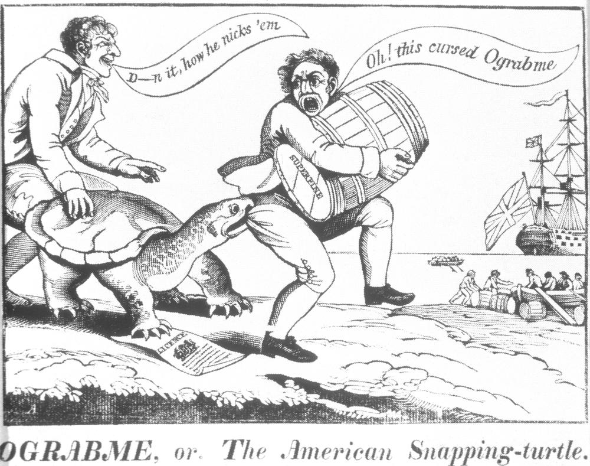
Image to comeHIST101_Ch7_Lec4_Slide06_Ograbme_Embargo_Cartoon_revised_FA26.jpg
Ograbme, or, The American Snapping-Turtle, 1807–1808, attributed to Alexander Anderson. A Federalist cartoon: the turtle is the Embargo. Public domain, via Wikimedia Commons.
Sources: Office of the Historian, “Embargo of 1807”; Douglas A. Irwin, “The Welfare Cost of Autarky: Evidence from the Jeffersonian Trade Embargo, 1807–09” (2005).
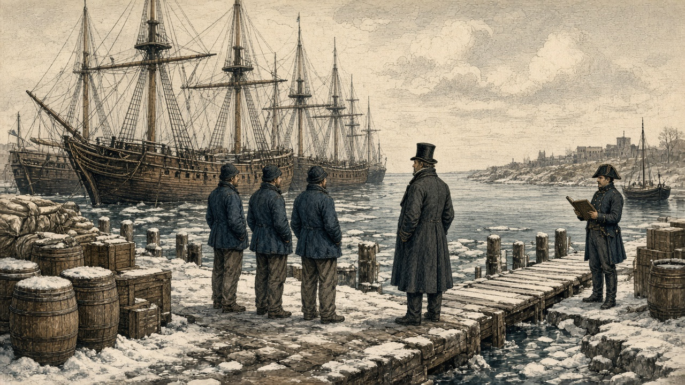
Image to comeHIST101_Ch7_Lec4_Slide07_Idle_Ships_Embargo_Harbor_revised_FA26.png
AI-generated historical interpretation in a hand-colored copperplate-engraving style; not a period image or historical evidence.
New England ports · 1808–1809
Peaceable Coercion Became Coercion at Home
Idle ports: Ships sat at the wharves. Sailors and dockworkers lost their jobs.
Smugglers: Goods slipped into Canada by wagon and across Lake Champlain.
Enforcement: The 1809 Enforcement Act let federal officers seize cargoes on suspicion.
Retreat: Congress repealed the Embargo in March 1809, days before Jefferson left office.
To avoid a war abroad, a party that feared federal power used more of it at home.
Sources: Office of the Historian, “Embargo of 1807”; Gautham Rao, National Duties: Custom Houses and the Making of the American State (2016).
President Madison · 1809–1811
Madison Tried Every Lever Short of War, and Each One Broke
1809: Non-Intercourse Act. Trade with everyone except Britain and France. Smugglers ignored it.
1809: A British envoy promised a deal. London rejected it. Madison looked foolish.
1810: Macon’s Bill No. 2. Whichever side dropped its rules first would get American trade.
1810–1811: Napoleon pretended to drop his. Madison cut off Britain again.
By 1811 the doors short of war had closed, one after another.
Sources: Office of the Historian, “War of 1812–1815”; Miller Center, “James Madison: Foreign Affairs.”
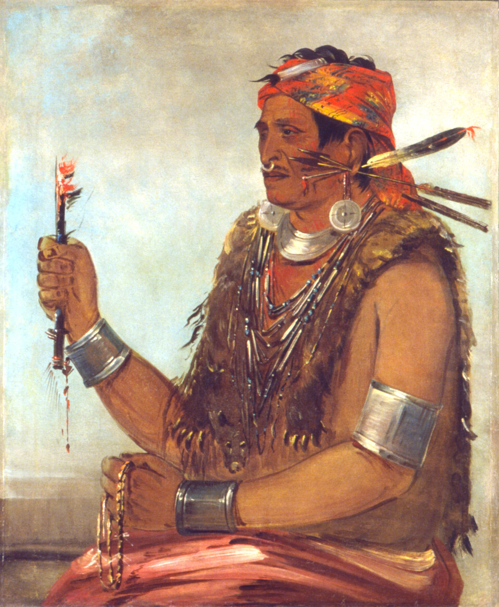
Image to comeHIST101_Ch7_Lec4_Slide09_Tenskwatawa_Portrait_revised_FA26.jpg
George Catlin, Tenskwatawa, the Prophet, 1830. Painted twenty years after Prophetstown. Smithsonian American Art Museum; public domain, via Wikimedia Commons.
Prophetstown · the Wabash River, Indiana · 1805–1808
In the West, a Shawnee Prophet Called Native Peoples to Turn Away From American Ways
The vision: In 1805 a Shawnee man named Lalawethika fell into a trance and woke as Tenskwatawa, “the Open Door.”
The message: Give up whiskey, American goods, and land sales. Return to the Creator’s ways.
The town: In 1808 his followers built Prophetstown where the Tippecanoe meets the Wabash.
This movement grew from Native goals, not British orders.
Sources: National Park Service, “Tenskwatawa”; Adam Jortner, The Gods of Prophetstown (2012).
Vincennes, Indiana Territory · August 1810
Tecumseh Told Governor Harrison That No One Nation Could Sell the Land
The sale: In 1809 Governor William Henry Harrison bought about 3 million acres at Fort Wayne from a few chiefs.
The answer: Tecumseh, the Prophet’s older brother, said the land belonged to all the tribes together.
The plan: He traveled from the Great Lakes to the Creek country to build one confederacy.
“Sell a country! Why not sell the air, the clouds and the great sea, as well as the earth?”
Attributed to Tecumseh, 1810, recorded years later
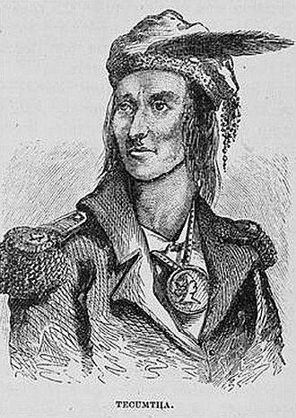
Image to comeHIST101_Ch7_Lec4_Slide10_Tecumseh_Portrait_revised_FA26.jpg
Tecumseh, engraving after a sketch attributed to Pierre Le Dru, published by Benson Lossing, 1868. No portrait from life is confirmed. Public domain, via Wikimedia Commons.
Sources: National Park Service, “Tecumseh”; Office of the Historian, “War of 1812–1815”; Treaty of Fort Wayne, 1809.
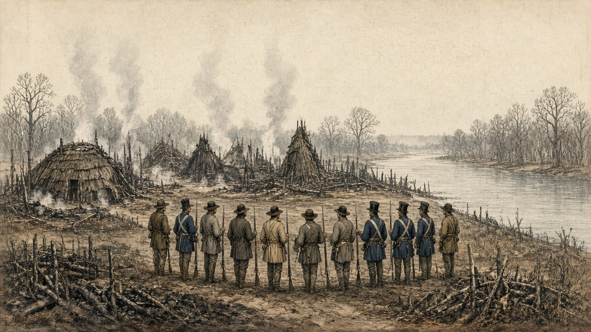
Image to comeHIST101_Ch7_Lec4_Slide11_Prophetstown_Burned_revised_FA26.png
AI-generated historical interpretation in a hand-colored copperplate-engraving style; not a period image or historical evidence.
Prophetstown · 7 November 1811
While Tecumseh Was Away, Harrison Marched on Prophetstown and Burned It
The march: Harrison led about 1,000 soldiers and militia to camp near the town.
The battle: Before dawn, the Prophet’s warriors attacked. About 62 Americans died. Native losses are unknown.
The fire: The next day Harrison’s men burned Prophetstown and its winter food.
The blame: Westerners said they found British-made guns and blamed Britain.
After Tippecanoe, many Americans saw the war at sea and the war in the West as one British war.
Sources: National Park Service, “Tippecanoe Battlefield”; Office of the Historian, “War of 1812–1815.”
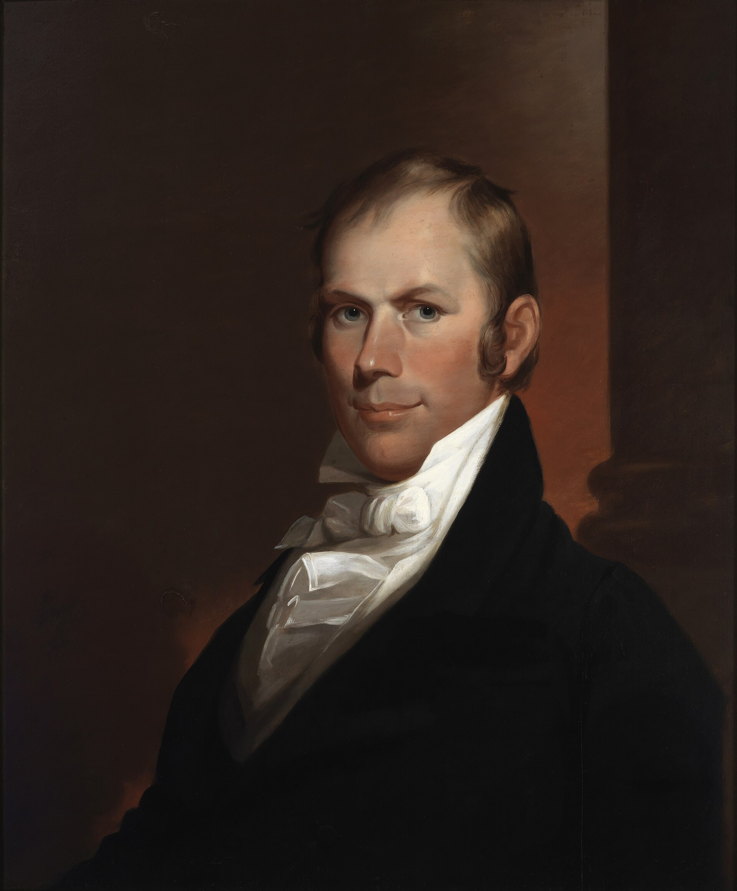
Image to comeHIST101_Ch7_Lec4_Slide12_Henry_Clay_Portrait_revised_FA26.jpg
Matthew Harris Jouett, Henry Clay, 1818. Public domain, via Wikimedia Commons.
The Twelfth Congress · Washington · November 1811
Young War Hawks Took Over Congress and Called Restraint Dishonor
Henry Clay of Kentucky, 34, was elected Speaker on his first day in the House.
Allies: John C. Calhoun of South Carolina, 29; Felix Grundy of Tennessee; Peter Porter of New York.
Their case: Britain insulted American ships and armed Native enemies. Honor demanded war.
The prize: Some hoped to seize Canada, as leverage or for keeps.
“Agrarian cupidity, not maritime right, urges the war.”
John Randolph of Virginia, opposing the War Hawks, December 1811
Agrarian cupidity: greed for farmland.
Sources: U.S. House of Representatives, History, Art & Archives, “Henry Clay”; Office of the Historian, “War of 1812–1815.”
Washington · 1–18 June 1812
A Divided Congress Declared War on Britain in June 1812
79–49
House, 4 June
19–13
Senate, 17 June
1 June: Madison’s war message listed impressment, ship seizures, and frontier warfare.
The split: Not one Federalist voted for war. Most of New England said no.
The irony: On 16 June, Britain announced it would drop its trade orders. The news crossed the ocean too late.
Sources: Madison, War Message, 1 June 1812, Founders Online; U.S. House, “The House’s First Declaration of War”; U.S. Senate, “Declaration of War with Great Britain, 1812.”
Two Crises or One?
Activity 2 • Weigh the causes
By 1812, Americans faced British pressure at sea and a Native confederacy in the West with British ties.
A. These were separate problems that War Hawk politicians merged to sell a war.
B. These were truly connected parts of one crisis over American independence.
Write two sentences: Which interpretation better explains why Congress chose war? Use one piece of evidence from today, such as Tippecanoe, Randolph’s charge, or the vote.
The war in brief · 1812–1813
The Invasion of Canada Failed, but Americans Won Lake Erie
Detroit, August 1812: General William Hull surrendered his whole army to the British and Tecumseh without a real fight.
At sea: The Constitution beat the Guerriere. Americans called her “Old Ironsides.”
Lake Erie, September 1813: Oliver Hazard Perry: “We have met the enemy and they are ours.”
The war that was supposed to be quick turned into a long, uneven fight.
Image to comeHIST101_Ch7_Lec4_Slide15_Battle_of_Lake_Erie_revised_FA26.jpg
William Henry Powell, Battle of Lake Erie, 1865. Painted half a century after the battle, and heroic by design. Public domain, via Wikimedia Commons.
Sources: U.S. Army Center of Military History, “War of 1812 Campaigns”; Naval History and Heritage Command, “Battle of Lake Erie.”
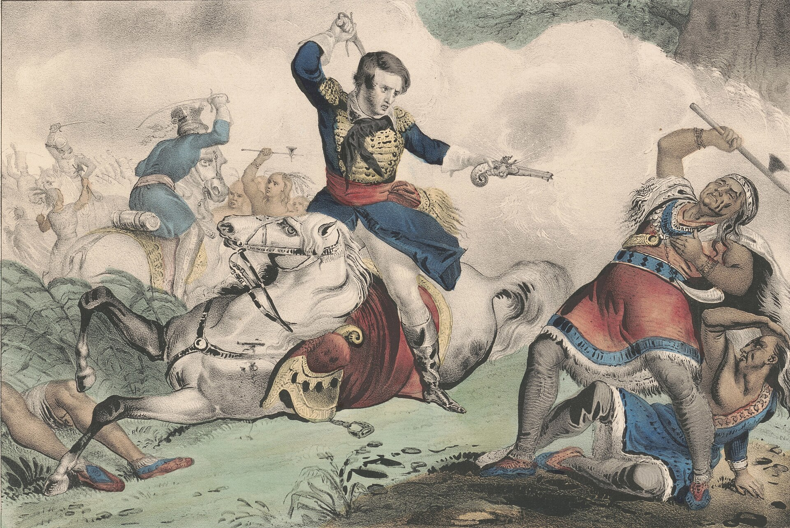
Image to comeHIST101_Ch7_Lec4_Slide16_Death_of_Tecumseh_revised_FA26.jpg
N. Currier, Death of Tecumseh: Battle of the Thames, hand-colored lithograph, 1846. Made decades later, it even misdates the battle (it says Oct. 18; the battle was Oct. 5). Library of Congress; public domain, via Wikimedia Commons.
The Thames, Upper Canada · Oct. 1813 · Horseshoe Bend, Alabama · March 1814
Tecumseh Died at the Thames, and His Dream of a Confederacy Died With Him
The Thames: Harrison caught the retreating British and Tecumseh in Upper Canada. Tecumseh was killed.
The South: A Creek civil war ended when Andrew Jackson crushed the Red Sticks at Horseshoe Bend.
Fort Jackson, 1814: Jackson forced the Creeks, even his Creek allies, to give up about 23 million acres.
Native resistance did not end. But the great confederacy never rose again.
Sources: National Park Service, “Indigenous Peoples and the War of 1812”; NPS, Horseshoe Bend National Military Park; Treaty of Fort Jackson, 1814.
Washington, D.C. · 24–25 August 1814
British Troops Burned the Capitol and the President’s House
Bladensburg: American militia broke and ran. Officials fled the capital.
That night: British officers ate the president’s dinner, then set the house on fire.
Rescue: Dolley Madison, the enslaved teenager Paul Jennings, and other staff saved Washington’s portrait.
The Taking of the City of Washington in America, wood engraving, London, 1814. A British print celebrating the raid. Library of Congress; public domain, via Wikimedia Commons.
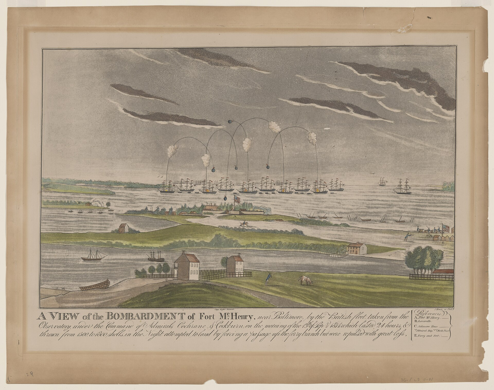
Image to comeHIST101_Ch7_Lec4_Slide18_Bombardment_of_Fort_McHenry_revised_FA26.jpg
John Bower, A View of the Bombardment of Fort McHenry, aquatint, c. 1814–1816. Library of Congress; public domain, via Wikimedia Commons.
Baltimore harbor · 13–14 September 1814
Three Weeks Later, Baltimore Held, and Francis Scott Key Wrote a Poem
The bombardment: British ships fired on Fort McHenry for about 25 hours, through a rainy night.
Dawn: A huge American flag still flew over the fort. The British withdrew.
The poem: Key, held on a ship during the attack, wrote “Defence of Fort M’Henry.”
Later: Set to music, it became the national anthem in 1931.
A defense, not a conquest, gave the war its most lasting symbol.
Sources: National Park Service, Fort McHenry National Monument; Smithsonian National Museum of American History, “The Star-Spangled Banner.”
Ghent · 24 December 1814 · New Orleans · 8 January 1815
Peace Was Signed at Ghent Two Weeks Before the War’s Most Famous Battle
Ghent: The treaty restored the prewar borders. It did not mention impressment.
New Orleans: Andrew Jackson’s mixed army of regulars, militia, free Black soldiers, Choctaws, and pirates held a line of earthworks.
The cost: About 2,000 British casualties. About 70 American.
The catch: No one in America knew the treaty had already been signed.
The battle did not win the war. It won the memory of the war.
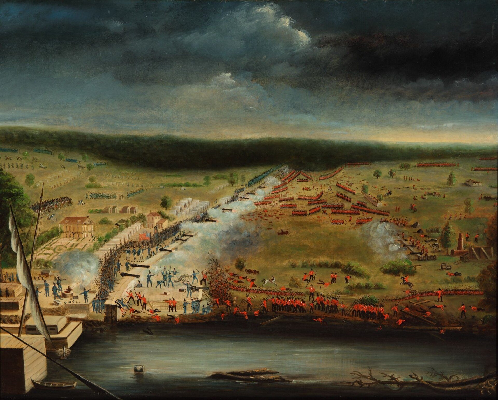
Image to comeHIST101_Ch7_Lec4_Slide19_Battle_of_New_Orleans_Laclotte_revised_FA26.jpg
Jean Hyacinthe de Laclotte, Battle of New Orleans, 1815, painted by an engineer who served there. New Orleans Museum of Art; public domain, via Wikimedia Commons.
Sources: Office of the Historian, “Treaty of Ghent”; National Park Service, Chalmette Battlefield; Naval History and Heritage Command, “The Battle of New Orleans.”
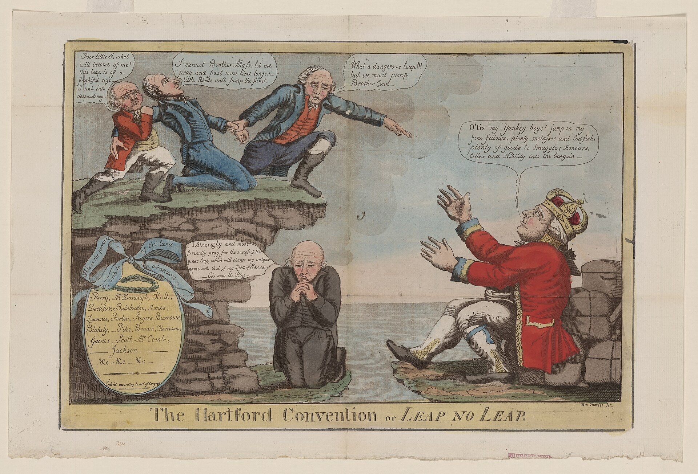
Image to comeHIST101_Ch7_Lec4_Slide20_Hartford_Convention_Cartoon_revised_FA26.jpg
William Charles, The Hartford Convention, or Leap No Leap, 1814–1815. A Republican cartoon mocking the Federalists. Library of Congress; public domain, via Wikimedia Commons.
Hartford, Connecticut · December 1814–January 1815
New England Federalists Protested the War Just as Peace and Victory Arrived
The meeting: 26 delegates from New England met in secret to protest “Mr. Madison’s War.”
The demands: Constitutional amendments, like a two-thirds vote in Congress to declare war.
The timing: Their messengers reached Washington with the news of New Orleans and Ghent.
The result: Republicans called them traitors. The Federalist Party faded away.
Parties: The Federalists collapsed. Republicans ran the country almost alone.
A turn: Madison now asked for a national bank, a tariff, and a stronger army and navy.
“The people … are more American; they feel and act more as a nation.”
Albert Gallatin, Treasury secretary and peace negotiator, 1816
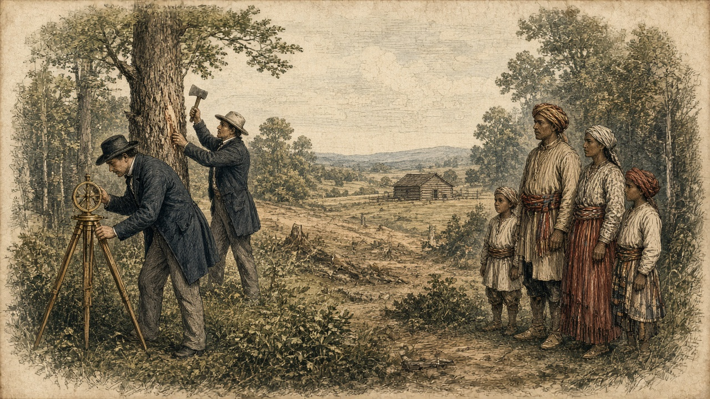
Image to comeHIST101_Ch7_Lec4_Slide21_Surveying_Creek_Land_revised_FA26.png
AI-generated historical interpretation in a hand-colored copperplate-engraving style; not a period image or historical evidence.
Sources: Gallatin to Matthew Lyon, 7 May 1816; Madison, Seventh Annual Message, 5 December 1815, Founders Online; NPS, “Indigenous Peoples and the War of 1812.”
Image to comeHIST101_Ch7_Lec4_Slide02_Chesapeake_and_Leopard_revised_FA26.jpg
Fred S. Cozzens, Leopard and Chesapeake, drawing published 1897, ninety years after the event. Public domain, via Wikimedia Commons.
Boston harbor, July 1812 · and the end of Chapter 7
The Republic That Feared War Survived One and Came Out More National Than Its Founders Planned
1789: Washington wondered whether the Constitution could work at all.
1801: Power passed peacefully from one party to its rivals.
1815: The republic had fought the world’s strongest empire and survived.
The price: Native nations paid for that survival with their land.
Did the War of 1812 complete the Revolution, or turn the republic into what Republicans once feared?
Sources: Office of the Historian, “War of 1812–1815”; Naval History and Heritage Command, “Chesapeake-Leopard Affair.”
Beyond the lecture
Pierian Spring
Optional Independent Study
The lecture ends here. These slides tell the battles, the politics, and the side stories in more depth, for anyone who wants to drink deeper.
“A little learning is a dang’rous thing; Drink deep, or taste not the Pierian spring.” Alexander Pope, An Essay on Criticism, 1711
Independent study · Why Britain and not France?
France Seized American Ships Too, but Britain Was the Bigger Threat
Both empires: Britain’s Orders in Council and Napoleon’s Berlin and Milan Decrees (1806–1807) both led to seized neutral ships.
Britain’s reach: Its navy ruled the ocean, it impressed sailors, and it sat next door in Canada.
Party memory: Republicans had distrusted Britain since the Revolution and the Jay Treaty.
Timing: Britain suspended its Orders on 16 June 1812, two days before Madison signed the declaration.
A cause is not just an injury. It is injury plus power, geography, politics, and timing.
Sources: Office of the Historian, “War of 1812–1815”; J.C.A. Stagg, The War of 1812: Conflict for a Continent (2012).
Independent study · The Little Belt affair · 16 May 1811
In 1811 an American Frigate Battered a Small British Warship, and Each Side Blamed the Other
The clash: USS President met HMS Little Belt off the Virginia capes after dark.
The damage: The much larger American ship killed 9 and wounded 23 British sailors.
The meaning: Americans cheered it as payback for the Chesapeake. Britain called it an outrage.
Escalation narrows choices even when no one can agree who fired first.
Sources: Naval History and Heritage Command, “The Little Belt Affair.”
Independent study · The war at sea and on the Lakes · 1812–1813
“Don’t Give Up the Ship” Began as a Dying Captain’s Order and Became Perry’s Battle Flag
1812: American frigates won several famous single-ship duels, including Constitution over Guerriere.
1 June 1813: HMS Shannon captured the Chesapeake off Boston. Captain James Lawrence was mortally wounded.
10 Sept. 1813: Perry named his Lake Erie flagship Lawrence and flew “DONT GIVE UP THE SHIP.”
The bigger picture: By 1814 the British blockade had bottled up most of the U.S. Navy.
Single-ship victories built pride. The blockade showed who really ruled the sea.
Sources: Naval History and Heritage Command, “Battle of Lake Erie” and “Chesapeake vs. Shannon.”
Independent study · The Creek War · 1813–1814
The Creek War Was a Civil War Before It Was an American War
The split: Red Stick Creeks wanted to resist American ways; other Creeks sought peace and trade.
Fort Mims, Aug. 1813: Red Sticks killed about 250 people, including settlers, Creeks of mixed ancestry, and enslaved people.
Horseshoe Bend, March 1814: Jackson’s army and its Cherokee and Creek allies killed about 800 Red Sticks.
Fort Jackson, Aug. 1814: Jackson took about 23 million acres from friend and foe alike.
Allies and enemies lost land together. That lesson shaped Native politics for a generation.
Sources: National Park Service, Horseshoe Bend National Military Park; Treaty of Fort Jackson, 9 August 1814.
Independent study · Paul Jennings · Washington, 1814 and 1865
An Enslaved Teenager Saw the Burning of Washington and Later Corrected the Record
1814: Paul Jennings, 15, enslaved by the Madisons, was in the President’s House when the British came.
1847: Jennings bought his freedom with help from Senator Daniel Webster.
1865: He published A Colored Man’s Reminiscences of James Madison, often called the first White House memoir.
Who tells the story shapes who becomes the hero.
Sources: Paul Jennings, A Colored Man’s Reminiscences of James Madison (1865); White House Historical Association, “Paul Jennings.”
Independent study · The anthem and the Colonial Marines
Key’s Anthem Had a Third Verse Many Read as Aimed at Enslaved Men Who Fought for Britain
The offer: In 1814 a British admiral promised freedom to enslaved people who came over to the British.
The Colonial Marines: Hundreds of formerly enslaved men fought in British uniforms in the Chesapeake.
Key’s third verse: “No refuge could save the hireling and slave / From the terror of flight or the gloom of the grave.”
After the war: Britain refused to return most of them. Many resettled in Nova Scotia and Trinidad.
For some Americans, Britain was the side that offered freedom.
Sources: Smithsonian National Museum of American History, “The Star-Spangled Banner”; National Park Service, “The Colonial Marines.”
Independent study · The Hartford Convention · 15 Dec. 1814–5 Jan. 1815
The Hartford Convention Proposed Seven Amendments to Protect New England
On war and trade: Two-thirds of both houses to declare war, ban trade, or admit new states. Embargoes capped at 60 days.
On power: End the three-fifths clause. One-term presidents. No two presidents in a row from the same state.
On newcomers: Bar naturalized citizens from Congress and federal office.
What failed: No amendment passed. Republicans used the meeting as proof of disloyalty.
Every proposal targeted Virginia’s power or a policy that had hurt New England.
Sources: Report and Resolutions of the Hartford Convention, 1815; NPS, “The Influence of Factious Leaders.”
Independent study · Native politics in the Ohio Valley
Prophetstown Was Never One Simple Alliance
Many nations: Shawnee, Kickapoo, Potawatomi, Ho-Chunk, and others gathered there.
Many critics: Miami and Delaware leaders, whose lands were nearby, often opposed the Prophet.
Many choices: Some Native leaders sought accommodation, some resistance, some local advantage.
Native politics were not reducible to “pro-British” or “anti-American.”
Sources: Patrick Bottiger, The Borderland of Fear (2016); Adam Jortner, The Gods of Prophetstown (2012).
Independent study · A war without a war machine
Republicans Chose War Without Building the Army or the Treasury to Fight It
Small army: Under 7,000 regulars in early 1812, many of them new recruits.
No bank: Republicans had let the Bank of the United States expire in 1811.
Militia limits: State militias often refused to fight outside the country.
Lesson learned: After 1815 the country kept a larger army and navy and chartered a new bank.
Understanding why war became thinkable is not the same as proving it was wise.
Sources: U.S. Army Center of Military History, “War of 1812 Campaigns”; Office of the Historian, “War of 1812–1815.”